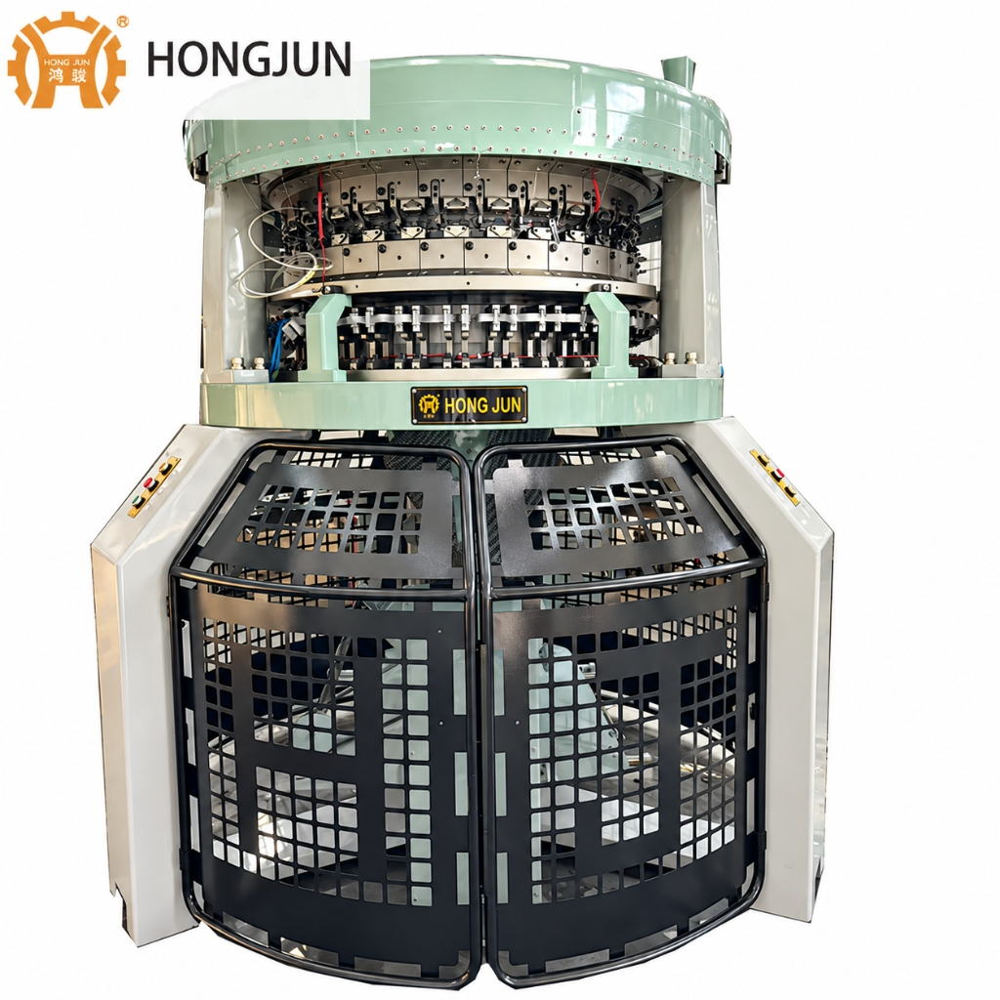

LINK JACQUARD
LINK JACQUARD Computer Electronic Jacquard Circular knitting machines
LINK JACQUARD Computer Electronic Jacquard Circular knitting machines equipped with advanced 3-way computerized needle selection and synchronized multi-yarn guides for complex relief and pattern knits.
- 1. Electronic System: Machine 3 way Chuangda Electronic jacquard computer system with microsecond actuator response.
- 2. Synchronized Feeder: Special Yarn guide possible for 3 yarn feeding at the same time.
- 3. Advanced CAD Telemetry: High-definition touchscreen monitor with USB pattern loading and automatic fault detection.